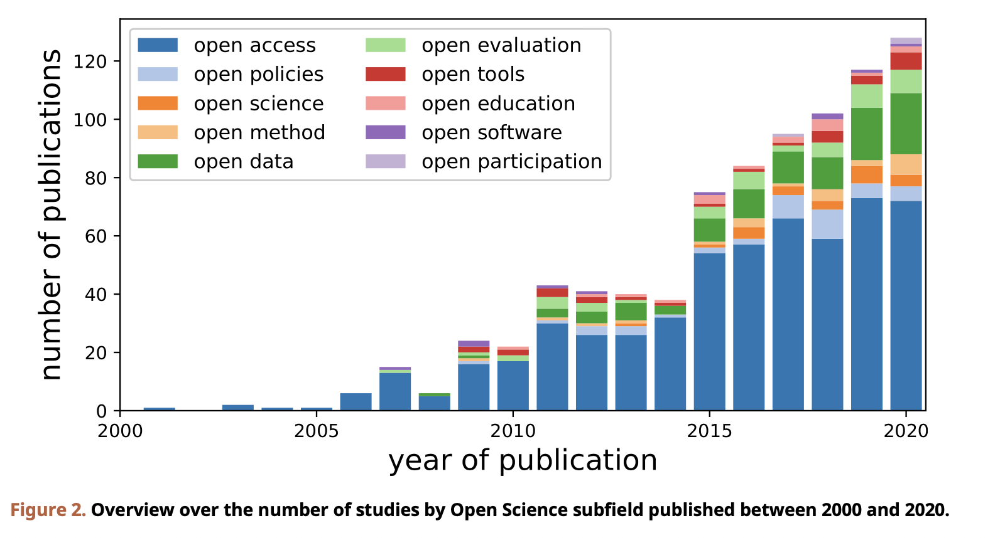

MapOSR Replication Project
Replication of Figure 2 — Studies by Open Science Subfield (2000–2020)
Step 9 — Plot Figure 2 (replication)
Code
fig2_plot <- ggplot(fig2_counts,
aes(x = `Publication Year`, y = n, fill = Action)) +
geom_col(color = "black", size = 0.2) +
scale_fill_manual(values = paper_colors) +
scale_x_continuous(breaks = seq(2000, 2020, 5), limits = c(2000, 2020)) +
scale_y_continuous(breaks = seq(0, 140, 20), limits = c(0, 160)) +
theme_minimal(base_size = 13) +
theme(
panel.grid = element_blank(),
axis.line = element_line(colour = "black"),
axis.ticks = element_line(colour = "black"),
legend.title = element_blank(),
legend.position = c(0.18, 0.60),
legend.background = element_rect(fill = "white", color = "black")
) +
labs(
x = "year of publication",
y = "number of publications",
caption = "Figure 2. Overview over the number of studies by Open Science subfield published between 2000 and 2020."
)
fig2_plot
Comparison: Original vs. Replication
Original Paper

Our Replication